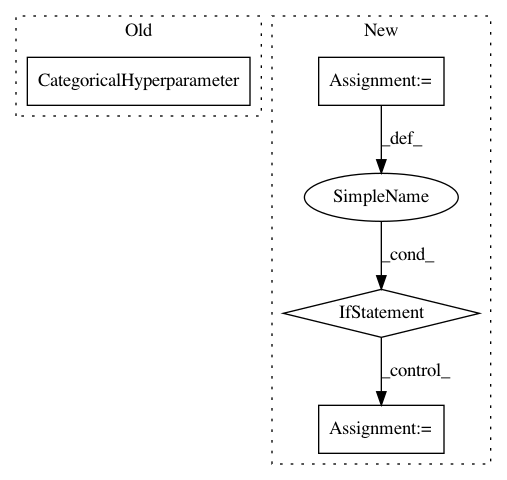

2b82a0f66a851603acf9b510265be9b3814143bb,ParamSklearn/components/classification/k_nearest_neighbors.py,KNearestNeighborsClassifier,get_hyperparameter_search_space,#Any#,73
Before Change
weights = CategoricalHyperparameter(
name="weights", choices=["uniform", "distance"], default="uniform")
algorithm = Constant(name="algorithm", value="auto")
p = CategoricalHyperparameter(
name="p", choices=[1, 2, 5], default=2)
leaf_size = Constant(name="leaf_size", value=30)
// Unparametrized
// TODO: If we further parametrize "metric" we need more metric params
After Change
weights = CategoricalHyperparameter(
name="weights", choices=["uniform", "distance"], default="uniform")
algorithm = Constant(name="algorithm", value="auto")
if dataset_properties.get("sparse"):
p_choices = [1, 2, 5]
else:
p_choices = [1, 2]
p = CategoricalHyperparameter(
name="p", choices=p_choices, default=2)
leaf_size = Constant(name="leaf_size", value=30)
In pattern: SUPERPATTERN
Frequency: 3
Non-data size: 4
Instances
Project Name: automl/auto-sklearn
Commit Name: 2b82a0f66a851603acf9b510265be9b3814143bb
Time: 2015-04-17
Author: feurerm@informatik.uni-freiburg.de
File Name: ParamSklearn/components/classification/k_nearest_neighbors.py
Class Name: KNearestNeighborsClassifier
Method Name: get_hyperparameter_search_space
Project Name: automl/auto-sklearn
Commit Name: 7cb6c2272c853f53739661d40238d63d84422c35
Time: 2015-01-09
Author: feurerm@informatik.uni-freiburg.de
File Name: AutoSklearn/autosklearn.py
Class Name: AutoSklearnClassifier
Method Name: get_hyperparameter_search_space
Project Name: automl/auto-sklearn
Commit Name: a9424721477b640dcd61435340bbc3e4d7e8902e
Time: 2015-04-23
Author: feurerm@informatik.uni-freiburg.de
File Name: ParamSklearn/components/preprocessing/nystroem_sampler.py
Class Name: Nystroem
Method Name: get_hyperparameter_search_space